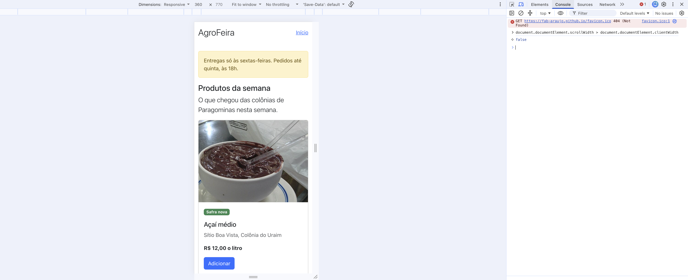
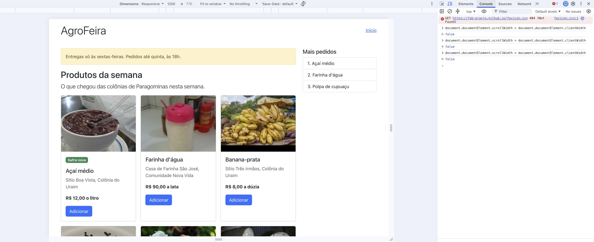
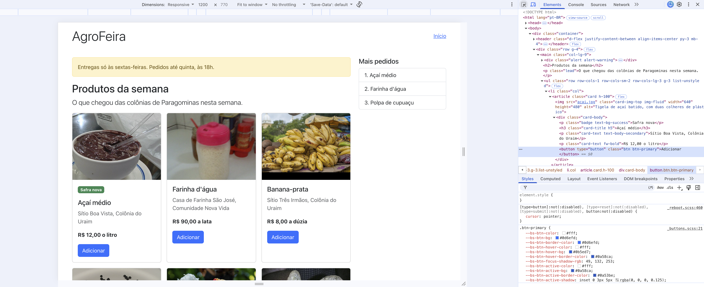
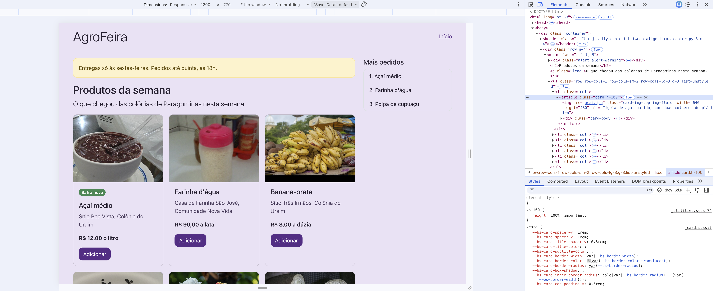
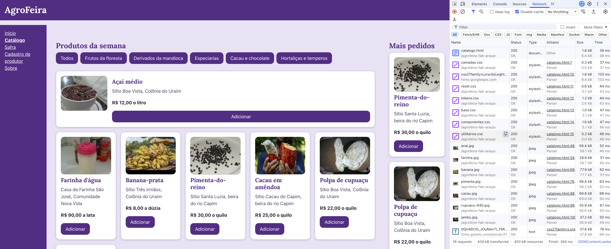
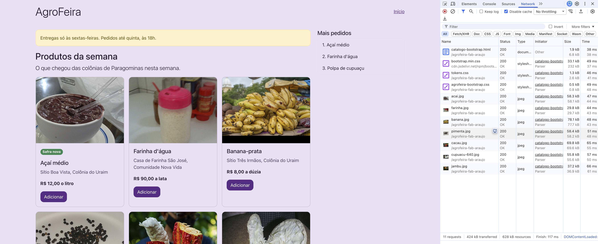
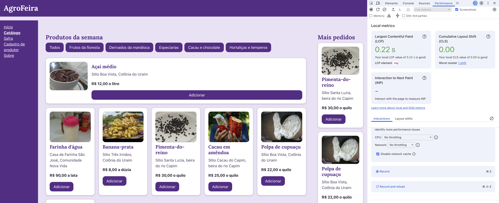
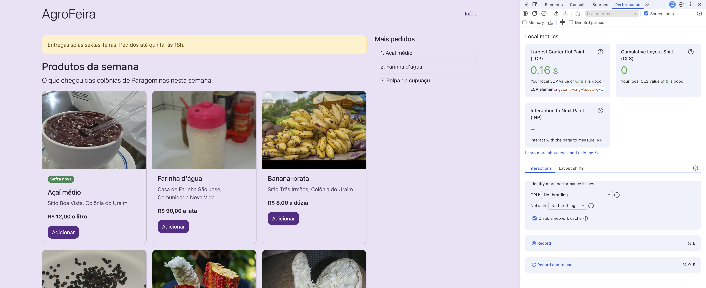

Comparativo: o catálogo autoral e o catálogo em Bootstrap
Solução de referência da Atividade 5 (aqui vão o seu nome e a sua matrícula).
Repositório: https://github.com/fab-araujo/2026.2-LPS-BSI-PGM
- Site: https://fab-araujo.github.io/2026.2-LPS-BSI-PGM/aula05/solucao_atividade_aula05/
- Catálogo autoral: https://fab-araujo.github.io/2026.2-LPS-BSI-PGM/aula05/solucao_atividade_aula05/catalogo.html
- Catálogo em Bootstrap: https://fab-araujo.github.io/2026.2-LPS-BSI-PGM/aula05/solucao_atividade_aula05/catalogo-bootstrap.html
O catálogo em três larguras
Em 360 px o catálogo em Bootstrap mostra uma coluna de cartões (sete fileiras), sem a lista "Mais pedidos", e o teste da rolagem deu false (Captura 1).
Em 768 px são duas colunas de cartões (2 + 2 + 2 + 1), ainda sem a lista "Mais pedidos", e o teste da rolagem deu false.
Em 1200 px são três colunas (3 + 3 + 1, com o cartão do jambu sozinho na terceira fileira) e a lista "Mais pedidos" aparece à direita, ao lado do aviso; o teste da rolagem deu false (Captura 2). A passagem de uma para duas colunas acontece em 576 px, e a de duas para três colunas, com a lista, em 992 px.


1. A customização
| Variável alterada | Valor | Por quê |
|---|---|---|
--bs-body-bg |
--cor-fundo (#ece3f5) |
É o fundo da página e, como os cartões e a lista "Mais pedidos" leem a mesma variável, o fundo deles: na Captura 4 tudo ficou lilás, e na Captura 2 era branco. |
--bs-body-color |
--cor-texto (#231a2d) |
É a cor do texto da página, como o título "Produtos da semana": de cinza-escuro (#212529) para um quase preto arroxeado. |
--bs-secondary-color |
--cor-texto-suave (#4e3d5e) |
É a cor da classe text-body-secondary, a do nome do produtor em cada cartão. |
--bs-body-font-family |
--fonte-texto (system-ui, sans-serif) |
É a letra do texto da página; na Captura 4 ela é igual à da Captura 2, porque a letra do meu token é a do sistema. |
--bs-border-radius |
--raio (12px) |
São os cantos do cartão, do alerta e do botão: de 0,375rem (6 px) para 12 px, o que se vê nos cantos do cartão do açaí. |
--bs-link-color-rgb |
--cor-marca-rgb (91, 42, 134) |
É a cor do link "Início": a regra a lê esse trio, e não a --bs-link-color; o link deixou de ser azul (13, 110, 253) e ficou roxo. |
--bs-link-hover-color-rgb |
--cor-marca-forte-rgb (63, 27, 97) |
É a cor do link com o ponteiro em cima, que a regra a:hover lê: roxo mais escuro, no lugar do azul (10, 88, 202). |
--bs-btn-bg e --bs-btn-border-color |
--cor-marca (#5b2a86) |
São o fundo e a borda do botão "Adicionar" no estado normal, as variáveis que a regra .btn-primary lê (Captura 3): roxo no lugar do #0d6efd. |
--bs-btn-color, --bs-btn-hover-color e --bs-btn-active-color |
--cor-sobre-marca (#ffffff) |
É o texto do botão, branco nos três estados, para ter contraste sobre o roxo. |
--bs-btn-hover-bg, --bs-btn-hover-border-color, --bs-btn-active-bg e --bs-btn-active-border-color |
--cor-marca-forte (#3f1b61) |
São o fundo e a borda do botão com o ponteiro em cima e pressionado: roxo mais escuro, no lugar dos azuis #0b5ed7 e #0a58ca. |
Por que a --bs-primary sozinha não muda o botão. No F12 troquei o valor da --bs-primary no :root por red: a linha ficou red, e o botão continuou azul, rgb(13, 110, 253). A Captura 3 mostra o motivo: o fundo do botão está na regra .btn-primary, do arquivo _buttons.scss, que declara --bs-btn-bg: #0d6efd, um valor escrito por extenso, e a regra .btn pinta o fundo com var(--bs-btn-bg). A variável que o botão lê é a --bs-btn-bg, e não a --bs-primary: na conversão do Sass para CSS, a cor principal virou um número fixo dentro do botão (seção 9.3). Por isso o agrofeira-bootstrap.css redefine a --bs-btn-bg e as outras --bs-btn-… na regra .btn-primary.
O antes e o depois, nas Capturas 2 e 4, em 1200 px e no tema claro. Quatro coisas mudaram:
- O fundo e a cor do texto passaram do branco (#fff) e do cinza-escuro (#212529) de fábrica para #ece3f5 (
--cor-fundo) e #231a2d (--cor-texto). - O botão "Adicionar" passou do azul #0d6efd, e #0b5ed7 com o ponteiro em cima, para o roxo #5b2a86 (
--cor-marca), e #3f1b61 com o ponteiro em cima (--cor-marca-forte). - O link "Início" passou do azul rgb(13, 110, 253), e rgb(10, 88, 202) com o ponteiro em cima, para rgb(91, 42, 134) e rgb(63, 27, 97), os trios de
--cor-marca-rgbe--cor-marca-forte-rgb. - Os cantos do cartão, do alerta e do botão passaram de 0,375rem (6 px) para 12 px (
--raio).

.btn-primary no painel Styles, com --bs-btn-bg: #0d6efd.
2. As medições
Medi no Chrome 155, em https://fab-araujo.github.io/2026.2-LPS-BSI-PGM/aula05/solucao_atividade_aula05/ (o catalogo.html e o catalogo-bootstrap.html), com o modo dispositivo desligado, com Disable cache (aba Network) e Disable network cache (aba Performance) marcadas, CPU e Network em No throttling, e a área da página de 1545 por 857 nas duas páginas (resposta do Console: (2) [1545, 857]). O LCP é de cinco cargas de cada página, sem descartar nenhuma.
| Critério | Autoral (catalogo.html) | Bootstrap (catalogo-bootstrap.html) |
|---|---|---|
| CSS transferido | 6,4 kB (1,6 kB do Google Fonts) | 35,0 kB (bootstrap.min.css 33,1 kB + tokens.css 1,3 kB + agrofeira-bootstrap.css 0,5 kB) |
| Fontes | 37,8 kB | 0,0 kB |
| Imagens | 387 kB | 387 kB |
| Documento | 1,8 kB | 1,9 kB |
| Total transferido | 434 kB (sem a linha favicon.ico) | 424 kB (sem a linha favicon.ico) |
| LCP (o valor do meio) | 0,22 s (0,38; 0,21; 0,23; 0,22; 0,22) | 0,16 s (0,16; 0,17; 0,16; 0,16; 0,16) |
| Linhas de CSS próprio | 461 linhas (1 + 44 + 76 + 99 + 240 + 1: camadas, reset, tokens, base, componentes e utilitarios) | 99 linhas (76 + 23: tokens.css e agrofeira-bootstrap.css) |
| Classes no cartão do açaí | 4 classes em 3 elementos | 14 classes em 8 elementos, sem o selo (com o selo: 16 classes em 9 elementos) |
O número de cada tipo é o do filtro do F12, e o total é o da barra de resumo; os arredondamentos não fecham exatamente. No autoral, 1,8 + 6,4 + 37,8 + 387 = 433,0 kB contra os 434 kB do total, e as sete linhas de CSS somam 6,5 kB contra os 6,4 kB do filtro. No Bootstrap, 1,9 + 35,0 + 0,0 + 387 = 423,9 kB contra 424 kB, e as três linhas de CSS somam 34,9 kB contra 35,0 kB. A linha favicon.ico não apareceu em nenhuma das duas listas, por isso não está nos totais. O valor do meio do LCP é o terceiro dos cinco em ordem crescente (autoral: 0,21; 0,22; 0,22; 0,23; 0,38; Bootstrap: 0,16; 0,16; 0,16; 0,16; 0,17).

catalogo.html: All, Disable cache marcada, linhas grandes, 16 requests e 434 kB transferred.
catalogo-bootstrap.html: o mesmo, com 11 requests e 424 kB transferred.
catalogo.html na 4ª das cinco cargas: 0,22 s, o elemento é uma img (a pimenta.jpg), com Disable network cache marcada.
catalogo-bootstrap.html na 3ª das cinco cargas: 0,16 s, o elemento é img.card-img-top.img-… (a farinha.jpg), com Disable network cache marcada.3. A leitura dos números
Os bytes. O Bootstrap baixou mais CSS: 35,0 kB contra 6,4 kB do autoral, 5,5 vezes mais (35,0 ÷ 6,4). Sem a folha do Google Fonts (1,6 kB), o autoral tem 4,8 kB de CSS e a conta sobe para 7,3 vezes (35,0 ÷ 4,8). O total transferido da página não responde isso, porque soma o que não é CSS: as fotos são as mesmas nas duas páginas (387 kB, 89% do total de 434 kB no autoral e 91% do total de 424 kB no Bootstrap), e a fonte só entra no autoral (37,8 kB, fora a folha de 1,6 kB). Por isso o autoral, com 28,6 kB a menos de CSS, ficou 10 kB acima no total (434 kB contra 424 kB): a fonte pesou mais do que o CSS que ele economizou.
O LCP. O valor do meio foi 0,22 s no autoral e 0,16 s no Bootstrap, uma diferença de 0,06 s. Entre as cinco cargas, o autoral variou 0,17 s (de 0,21 s a 0,38 s, e a primeira carga foi a mais lenta) e o Bootstrap, 0,01 s (de 0,16 s a 0,17 s). A diferença de 0,06 s entre as páginas é menor que a variação do autoral (0,17 s) e maior que a do Bootstrap (0,01 s). O número permite afirmar que, nesta sessão, as cinco cargas do Bootstrap (0,16 s a 0,17 s) ficaram abaixo das cinco do autoral (0,21 s a 0,38 s), e que as duas páginas ficaram muito abaixo dos 2,5 s que o Chrome chama de bom. Não permite afirmar que o Bootstrap é mais rápido nem que o framework causou a diferença: além do Bootstrap, só o catalogo.html baixa a folha e a fonte do Google Fonts, dois pedidos a outro servidor (e a folha é do head, que o navegador espera antes de pintar: seções 10.4 e 10.6), e o conteúdo é diferente (9 cartões contra 7, e o elemento do LCP foi a pimenta.jpg no autoral e a farinha.jpg no Bootstrap, nas cinco cargas de cada). O LCP mede a página inteira, e não o framework.
As linhas e as classes. Quem escreveu mais CSS fui eu no autoral: 461 linhas contra 99 do Bootstrap, 4,7 vezes mais. No HTML é o contrário: o cartão do açaí do Bootstrap, sem o selo, tem 14 classes em 8 elementos, contra 4 classes em 3 elementos no catalogo.html, 3,5 vezes mais classes. O trabalho de mudar uma decisão que vale para todos os cartões mora em lugares diferentes. No autoral, ele está no CSS, em uma regra ou num token: os cantos de todos os cartões são o --raio, a linha 44 do tokens.css, e o respiro e a sombra estão na regra .cartao-produto do componentes.css. No Bootstrap, as classes estão nos sete li do HTML, cada um com as suas 14 (98 ao todo), e só o que passa por variável, como o --bs-border-radius ligado ao --raio, se muda num lugar só. Os totais de linhas não incluem a mesma coisa. Os 461 do autoral são as seis folhas que servem as cinco páginas do site, e o componentes.css (240 linhas) traz regras que o catalogo.html não usa, como a .tabela-safra (da safra.html), a .formulario-cadastro (do cadastro-produtor.html) e a .pergunta (da sobre.html). Os 99 do Bootstrap são o tokens.css inteiro (76 linhas, o mesmo das duas versões, com os tamanhos, o espaço e o tema escuro) mais as 23 do agrofeira-bootstrap.css, para uma página só, e não contam as linhas do bootstrap.min.css, que eu não escrevi; o reset.css (44 linhas) só entra no autoral, porque o Reboot faz esse papel.
O que a medição não mostra. Primeiro, a volta ao site (seção 10.3): medi só a primeira visita, com o cache desligado. Quem volta já tem o bootstrap.min.css guardado, e numa recarga com o cache ligado a barra de resumo da página em Bootstrap marcou só 150 B transferidos; os 33,1 kB aparecem uma vez só, e a tabela não mostra isso. Segundo, o que o navegador precisa ler (seções 10.3 e 10.4): a tabela traz só o transferido, que vem comprimido, e o CSS do Bootstrap aberto tem 236 kB, contra 20,0 kB do autoral (a coluna do recurso, no filtro CSS). Terceiro, o LCP não separa o peso do CSS do custo do segundo servidor, o da jsDelivr, nem das outras diferenças entre as páginas, e foi medido numa conexão rápida, sem limitação de rede, numa sessão só (seção 10.6). A contagem de requisições (16 no autoral e 11 no Bootstrap) não entra como argumento: no HTTP/2 e no HTTP/3 muitos pedidos viajam juntos numa conexão por servidor, e o número não mostra o tempo de cada um nem o segundo servidor (seção 10.5).
Controle e trabalho. O catalogo.html tem cinco coisas que o meu catalogo-bootstrap.html não tem, e cada uma pediu linhas minhas no componentes.css: o link de pular (Atividades 2 e 4), com as regras .pular e .pular:focus-visible, 14 linhas, e a decisão de deixá-lo fora da tela até o foco do teclado; o menu (Atividades 2 e 3), com 10 linhas (.menu, .menu a e a do aria-current), fora o fundo da nav no base.css; a barra de categorias (Atividade 4), com 8 linhas (flex, quebra de linha e espaço) e os seis botões no HTML; a container query do cartão (Atividade 4), com 15 linhas, que deitam o cartão a partir de 26rem; e o :has() do foco (Atividade 4), com 4 linhas, que dão contorno ao cartão quando o botão dele recebe o foco. São 51 das 240 linhas do componentes.css, e cada uma é uma decisão que as classes do Bootstrap não tomam por mim: isso é controle, e o preço do controle é o trabalho de escrever e manter essas linhas. No sentido contrário, o catalogo-bootstrap.html tem o aviso de entrega, a frase de abertura e o selo "Safra nova", que o catalogo.html não tem, e a grade, o alerta e os cartões vieram só de classes, sem nenhuma linha minha: esse é o trabalho que o framework tirou de mim. Para pôr as minhas cores no Bootstrap precisei saber quatro coisas dele (Parte B): que as decisões ficam em variáveis --bs-*; que o botão lê as --bs-btn-… da regra .btn-primary, e não a --bs-primary (Captura 3); que o link lê o trio --bs-link-color-rgb, que pede vírgulas; e que o agrofeira-bootstrap.css tem de vir depois do Bootstrap e fora de qualquer @layer. E há decisões do meu catálogo que as classes do Bootstrap não tomam: os pontos de quebra. No Bootstrap eles são fixos e em pixels (576, 768, 992, 1200 e 1400 px, seção 4.1): no meu teste o catálogo passou de uma para duas colunas em 576 px e ganhou a lista em 992 px, valores que eu não escolhi. No catalogo.html, o ponto vem do conteúdo, em rem (42rem no base.css, e uma grade com minmax(12rem, 1fr) que muda o número de colunas sozinha).
4. Conclusão
Usaria o Bootstrap numa página cheia de fotos e de prazo curto, como o catálogo, porque as fotos são 387 kB dos 424 kB e os 35,0 kB do CSS dele pesam pouco, e ele a entregou com 99 linhas de CSS próprio em vez de 461; não usaria numa página só de texto, porque nela o CSS seria quase tudo o que se baixa, e ele custa 35,0 kB contra os 6,4 kB do autoral.